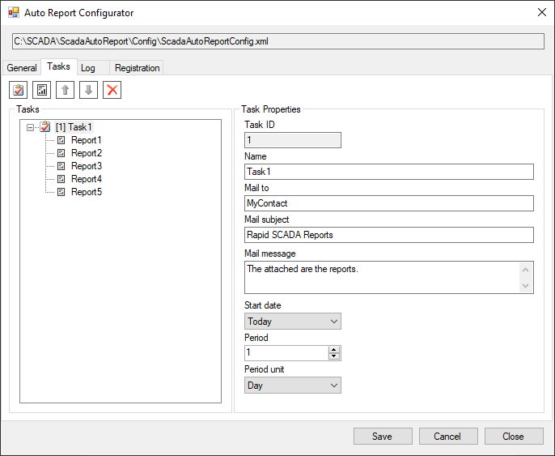

La aplicación “Auto Report” (Informe automático) está diseñada para generar varios informes en forma automática, guardarlos en disco y enviarlos por correo electrónico. El horario en que generar los informes se define utilizando el Módulo de Control Automático (Automatic Control Module). El envío de informes por correo electrónico se realiza mediante el controlador o driver KpEmail.dll correspondiente, que viene incluido en la instalación estándar de Rapid SCADA.
Se admiten los siguientes tipos de informes:
Auto Report funciona como un servicio. Se conecta a la aplicación del servidor (the Server application) y está siempre listo para recibir comandos. El módulo de Control Automático, que opera como parte del servidor, envía los comandos para ejecutar las tareas necesarias para generar los informes en un momento específico. Ante un comando, se genera un conjunto de informes y se guardan en disco en un formato de archivos de MS Office. Si se activa la opción correspondiente, la aplicación Auto Report le pasa un comando al servidor para enviar los informes generados por correo electrónico.
La configuración de Auto Report se almacena en el archivo C:\SCADA\ScadaAutoReport\Config\ScadaAutoReportConfig.xml. Para editarla se usa la aplicación ScadaAutoReportConfig.exe. La interfaz de usuario correspondiente se muestra en las siguientes figuras:

Para que el Informe Automático funcione, es necesario realizar ciertas configuraciones en el proyecto:
Las siguientes figuras muestran las acciones 1, 2 y 3:


Abajo, se muestra la configuración del Módulo de Control Automático:

En el proyecto DemoProject.en-GB.rsproj se incluye un ejemplo de la configuración de Communicator para enviar correos electrónicos (ítem 5). La siguiente figura muestra las propiedades del dispositivo:

Después de completar la configuración o cambiar la configuración existente, reinicie el servicio Auto Report. Para hacerlo, ejecute el archivo ScadaAutoReport\svc_restart.bat como administrador. El nombre del servicio es ScadaAutoReportService.
Para verificar, ejecute la tarea de generar un informe mediante la aplicación the Administrator application. Abra el formulario Generador y envíe un comando estándar, especificando el canal de control que se encarga de generar informes. En este ejemplo, el número del canal de salida es 201. Utilice el ID de tarea como valor del comando. Luego verifique los archivos de registro ubicados en el directorio C:\SCADA\ScadaAutoReport\Log\

Si la aplicación funciona bien, los informes generados se aparecerán en el directorio especificado en opciones generales, por defecto C:\SCADA\Reports\